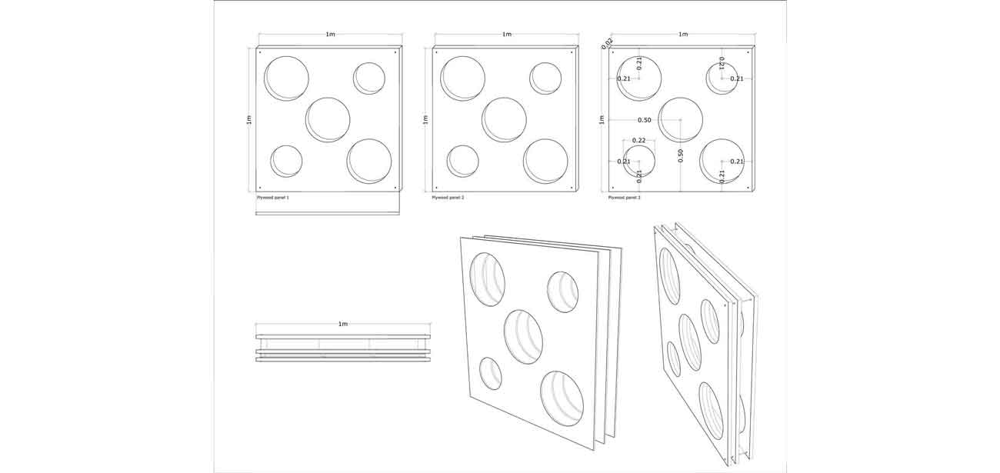
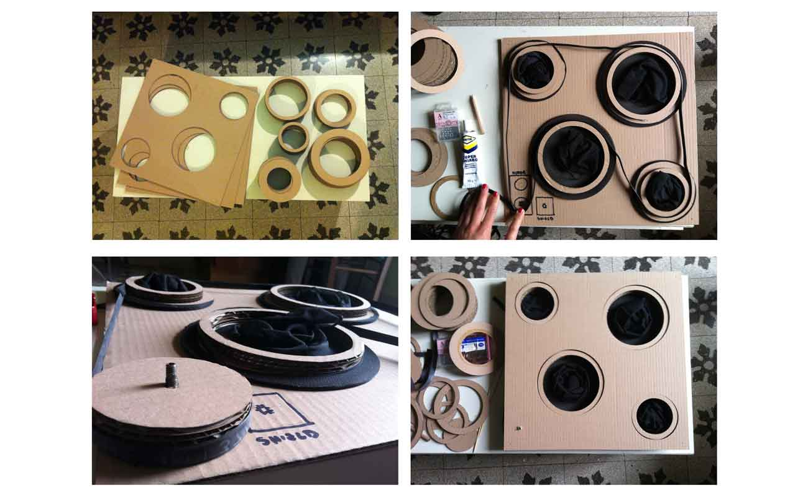
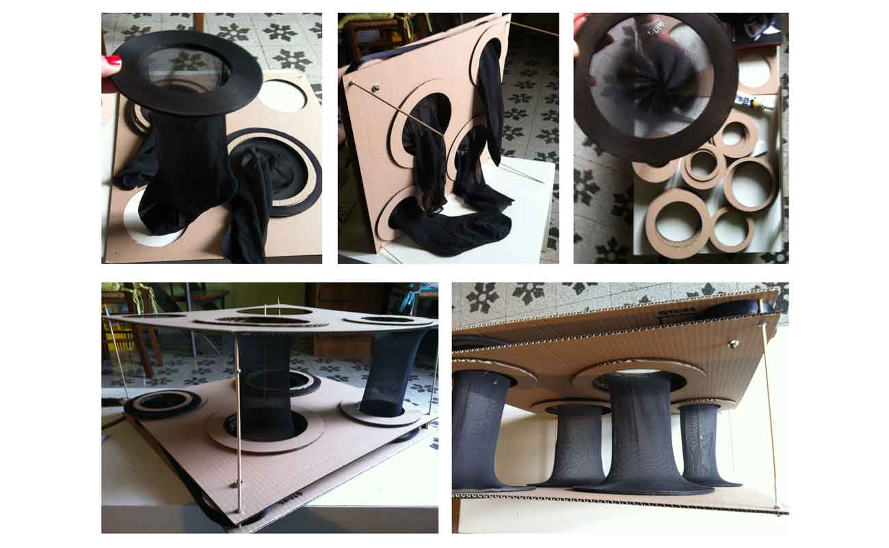

My final project is an interactive panel. I have chosen this project because I often work with museum exhibitions.
I decided that the panel had to respond to two inputs: changes of temperature and light, because they are the most important variables in the protection of a work of art.
The goal is to open and close parts of the panel. Since we are talking about light.
Activities to do for the development of this project:
-3D modeling;
-Laser cutting;
-3D printing;
-Electronic Design;
-milling;
-welding;
-programming;
-Assembly.
My prototype of my project is a modular 1x1 panel.

THE COMPONENTS:
Electronic components:
-Fab Kit Miky
-Electronic limit;
-2 Botton;
-1 Phototransistor;
-1 Temperature sensor.
Mechanical componenents:
-4 theaded rods;
-24 bolts;
-toothed belt;
-3 plywood panel 1x1m;
-Stretch cotton fabric;
-4 pulleys
-1 Wiper Motor
-1 Power module
I started with building a prototype, to better understand the mechanical functioning. The materials used are not the final ones, They are the ones that I had available and the cheaper ones.
As you can see the prototype is composed of three layers of cardboard.
The first two layers contain: gears, four pulleys, a toothed belt, the schild, the engine, the sensors, and the beginning of the elastic tissue.
The third layer instead hosts the end of the elastic tissue.
The mechanism is simple, there are four pulleys, connected by the toothed belt, which rotates thanks to a fifth pulley, with a different design, that is connected to the motor.
The motor starts to rotate the fifth pulley thanks to the light and temperature sensors. The sensors, through "fab Kit Miky”, communicate with the engine to tell it if to rotate clockwise or counterclockwise.
If there is too light or too cold, the motor starts to rotate clockwise, and it closes the tissue.
If there is no light and the temperature is mild the motor rotates anti-clockwise and it opens the tissue.
When everything is ready, the gear motor will move all together.